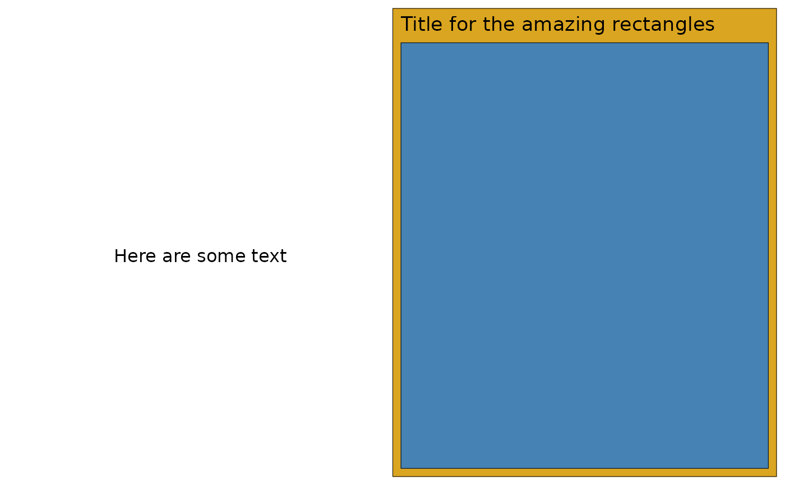
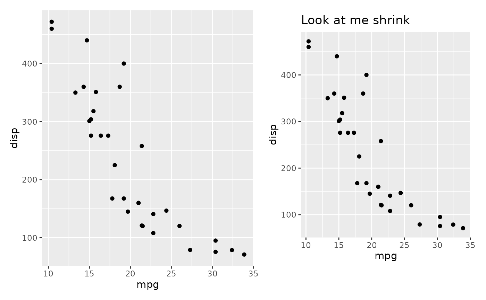
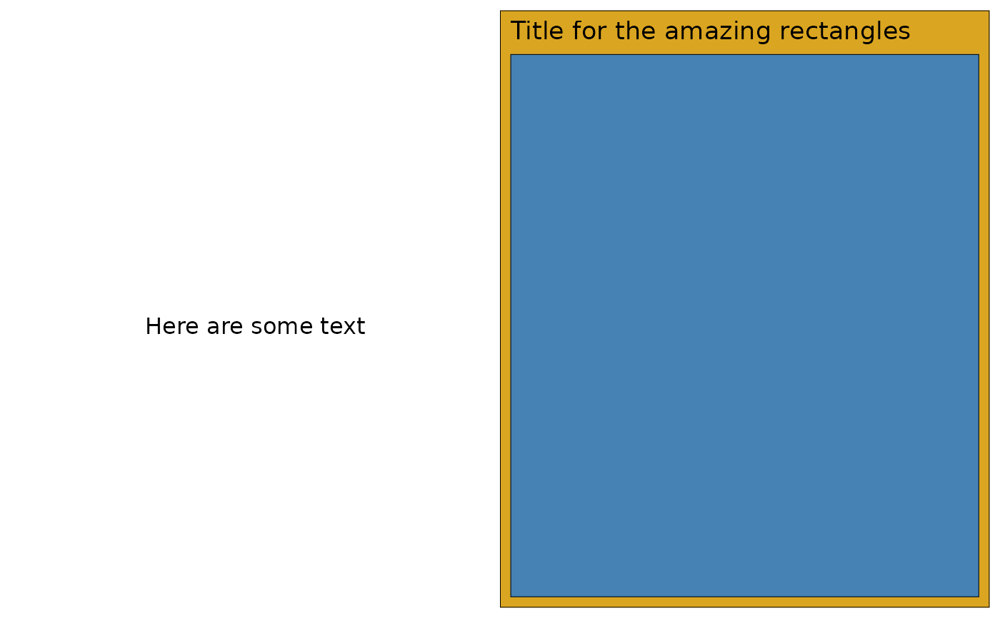
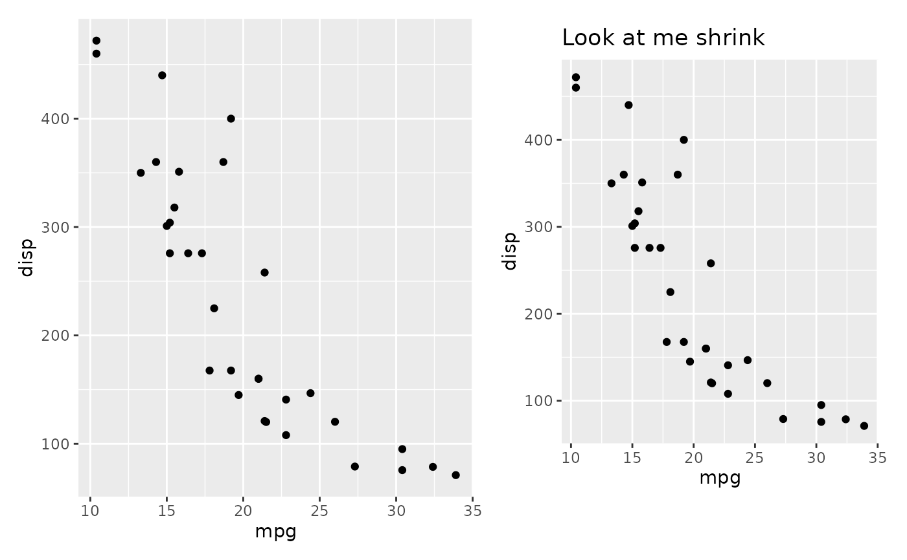

In order to add non-ggplot2 element to a patchwork they can be
converted to a compliant representation using the wrap_elements() function.
This allows you to position either grobs, ggplot objects, patchwork
objects, or even base graphics (if passed as a formula) in either the full
area, the full plotting area (anything between and
including the axis label), or the panel area (only the actual area where data
is drawn). Further you can still add title, subtitle, tag, and caption using
the same approach as with normal ggplots (using
ggtitle() and labs()) as well as styling
using theme(). For the latter, only the theme elements
targeting plot margins and background as well as title, subtitle, etc styling
will have an effect. If a patchwork or ggplot object is wrapped, it will be
fixated in its state and will no longer respond to addition of styling,
geoms, etc.. When grobs and formulas are added directly, they will implicitly
be converted to wrap_elements(full = x).
Arguments
- panel, plot, full
A grob, ggplot, patchwork, formula, raster, nativeRaster, or gt object to add to the respective area.
- clip
Should the grobs be clipped if expanding outside its area
- ignore_tag
Should tags be ignored for this patch. This is relevant when using automatic tagging of plots and the content of the patch does not qualify for a tag.
Examples
library(ggplot2)
library(grid)
# Combine grobs with each other
wrap_elements(panel = textGrob('Here are some text')) +
wrap_elements(
panel = rectGrob(gp = gpar(fill = 'steelblue')),
full = rectGrob(gp = gpar(fill = 'goldenrod'))
)
 # wrapped elements can still get titles etc like ggplots
wrap_elements(panel = textGrob('Here are some text')) +
wrap_elements(
panel = rectGrob(gp = gpar(fill = 'steelblue')),
full = rectGrob(gp = gpar(fill = 'goldenrod'))
) +
ggtitle('Title for the amazing rectangles')

# You can also pass in ggplots or patchworks to e.g. have it fill out the
# panel area
p1 <- ggplot(mtcars) + geom_point(aes(mpg, disp))
p1 + wrap_elements(panel = p1 + ggtitle('Look at me shrink'))

# You can even add base graphics if you pass it as a formula (requires gridGraphics package)
if (requireNamespace("gridGraphics", quietly = TRUE)) {
p1 + wrap_elements(full = ~ plot(mtcars$mpg, mtcars$disp))
# Adding a grob or formula directly is equivalent to placing it in `full`
p1 + ~ plot(mtcars$mpg, mtcars$disp)
}
# wrapped elements can still get titles etc like ggplots
wrap_elements(panel = textGrob('Here are some text')) +
wrap_elements(
panel = rectGrob(gp = gpar(fill = 'steelblue')),
full = rectGrob(gp = gpar(fill = 'goldenrod'))
) +
ggtitle('Title for the amazing rectangles')

# You can also pass in ggplots or patchworks to e.g. have it fill out the
# panel area
p1 <- ggplot(mtcars) + geom_point(aes(mpg, disp))
p1 + wrap_elements(panel = p1 + ggtitle('Look at me shrink'))

# You can even add base graphics if you pass it as a formula (requires gridGraphics package)
if (requireNamespace("gridGraphics", quietly = TRUE)) {
p1 + wrap_elements(full = ~ plot(mtcars$mpg, mtcars$disp))
# Adding a grob or formula directly is equivalent to placing it in `full`
p1 + ~ plot(mtcars$mpg, mtcars$disp)
}